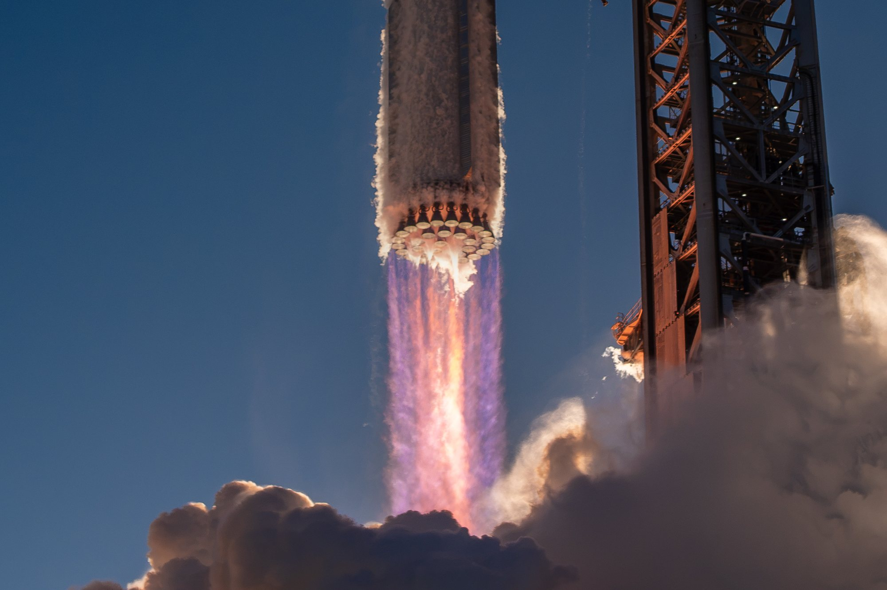
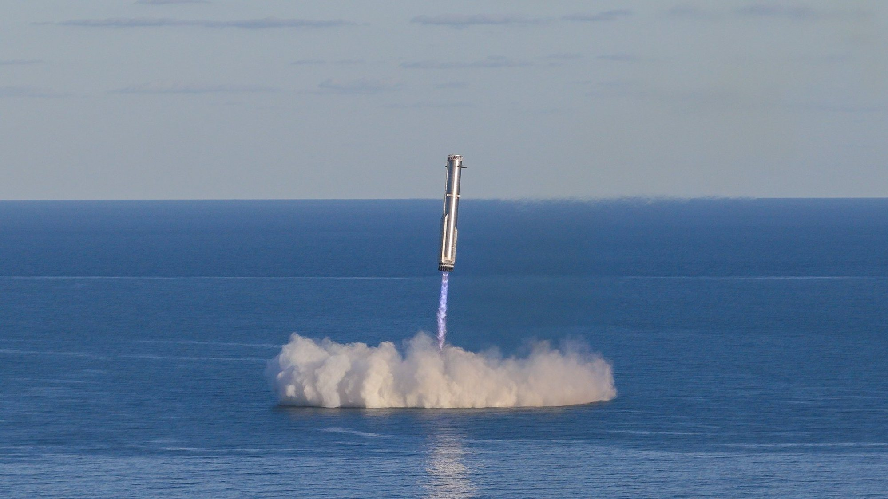
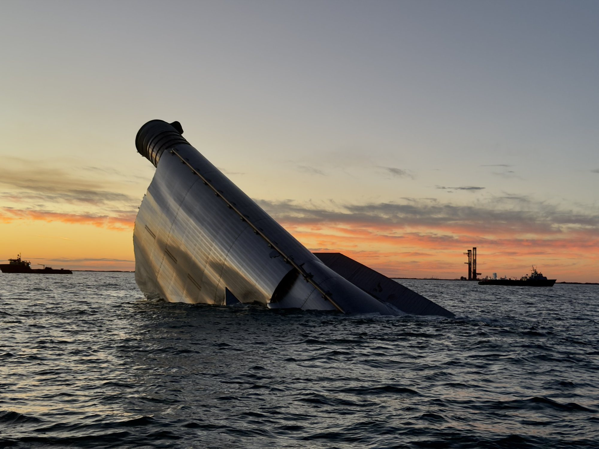
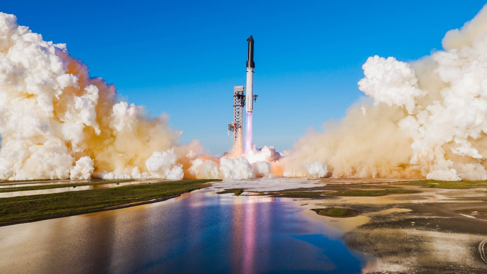

Venerdì 13 novembre 2026, alle 23:47 ora italiana (16:47 in Texas), Starship è partita da Starbase per il suo quindicesimo volo di prova. È il volo più ambizioso del programma: SpaceX vuole dimostrare che il razzo più grande mai costruito può tornare a casa per intero, con il primo stadio Super Heavy ripreso dai bracci della torre pochi minuti dopo il decollo e la nave, la Ship, ripresa allo stesso modo dopo quasi un giorno in orbita. La prima metà del piano non è riuscita: Booster 22 ha rinunciato da solo al rientro verso la rampa. La seconda è ancora in corso, e per ora va come previsto.
Il decollo e la separazione
Lo stack era composto da Booster 22 e Ship 42, entrambi della terza versione di Starship, la V3: è il quarto volo di questa generazione. I due veicoli avevano completato gli static fire a fine ottobre, 33 Raptor accesi a piena durata per il booster e sei per la nave, più un’accensione singola che simulava la manovra di deorbit. Il decollo è avvenuto dal Pad 2, la nuova rampa di Starbase, poco dopo l’apertura della finestra.
La fase di salita è filata liscia. Pochi minuti dopo il decollo è arrivata la separazione a caldo: i Raptor della Ship si accendono mentre è ancora agganciata al booster, che poi inverte la rotta. «Hot-staging separation! Starship’s Raptor engines have ignited, and the Super Heavy is boosting back towards Starbase for a catch», ha scritto SpaceX in diretta. Il booster stava quindi tornando verso la torre, come da programma.

Booster 22 rinuncia al catch
Pochi minuti dopo, il primo colpo di scena: «Super Heavy has diverted to an offshore splashdown in the Gulf». Il booster ha abbandonato la traiettoria verso la rampa e si è diretto verso il mare, nel Golfo del Messico, davanti alla costa. Lì ha eseguito l’accensione di atterraggio sopra l’acqua. Poco prima di toccare l’acqua lo stadio è esploso; una sua sezione è poi rimasta a galla mentre i propellenti residui bruciavano. SpaceX non ha detto se sia intervenuto il sistema di terminazione del volo.
La spiegazione è arrivata nella notte da Dan Huot, della comunicazione SpaceX: Booster 22 ha interrotto automaticamente il tentativo di rientro al Pad 2 per un problema di GNC, cioè del sistema di guida, navigazione e controllo. In pratica il software di bordo ha rilevato che qualcosa non rispettava i criteri richiesti per avvicinarsi alla torre e ha scelto da solo la via di sicurezza, il mare. È esattamente il comportamento previsto: un booster da oltre settanta metri non si avvicina alla rampa se i parametri non sono tutti verdi.
Per il programma è un passo indietro solo parziale. Il Super Heavy è già stato ripreso dalla torre tre volte, sui voli 5, 7 e 8, ma si trattava della generazione precedente. Un booster V3 non è ancora mai tornato alla rampa, e Flight 15 era il primo tentativo con la nuova versione e con il Pad 2. Il problema di guida andrà capito prima del prossimo volo.


Ship 42 entra in orbita
Intanto la nave proseguiva. A fine salita Ship 42 si è trovata su una traiettoria suborbitale, come previsto: SpaceX si era riservata una verifica dei sistemi prima di decidere. Poi il via: «Go for orbit!», con una breve accensione di un singolo Raptor per salire su un’orbita di circa 275 chilometri. Circa 28 minuti dopo il decollo SpaceX ha confermato che Starship era entrata in orbita «for the second time»: la prima volta era successo con Flight 14, il 28 settembre.
Subito dopo è cominciato il rilascio del carico. In circa 42 minuti la nave ha liberato uno dopo l’altro i 26 satelliti Starlink V3, e alle 01:06 italiane è arrivata la conferma: «Payload deploy complete. All 26 Starlink V3 satellites are in orbit». Alcuni di questi satelliti sono stati modificati con telecamere per osservare dall’esterno lo scudo termico della nave e trasmettere le immagini a terra: è un modo nuovo di controllare lo stato delle piastrelle prima del rientro, senza dover aspettare che la nave torni.
Tutta la missione è stata seguita in diretta video dall’orbita grazie a Starlink, che fa da ponte tra la nave e il centro di controllo. Circa novanta minuti dopo il lancio Ship 42, con il treno dei 26 satelliti appena rilasciati, è stata vista passare nel cielo sopra Starbase.
Perché contano i 26 Starlink V3
Gli Starlink V3 sono troppo grandi per Falcon 9: possono volare solo su Starship. Ogni satellite aggiunge circa un terabit al secondo di capacità alla rete, molto più delle versioni attuali. «Today’s Starlink payload will add up to 26 Terabits of capacity to the constellation», ha scritto l’account Starlink. Elon Musk ha rilanciato in mattinata: «Future Starship flights will carry over 50 Tb/s of Starlink bandwidth to orbit».
È questo il vero motivo economico per cui SpaceX spinge su Starship: ogni volo riuscito mette in orbita una capacità che con Falcon 9 richiederebbe molte missioni. Ma il conto torna solo se la nave diventa riutilizzabile come il booster, ed è qui che entra in gioco la parte più delicata del volo.
Il volo più lungo di sempre
Dopo il rilascio dei satelliti la nave è passata a una lunga fase di crociera. «Starship is now in a long coast phase around Earth. Teams will monitor Starship’s systems over the next ~21 hours that we intend to be in orbit for. We do have a few early deorbit options available should we need them, but all systems are looking good right now», ha scritto SpaceX. Circa tre ore e nove minuti dopo il decollo Flight 15 ha superato la durata di Flight 14 (3 ore, 8 minuti e 31 secondi), diventando il volo Starship più lungo di sempre.
Il piano prevede circa 14 orbite. «Starship is traveling around the world every ~90 minutes right now», ha scritto Musk, e poco dopo: «So far, so good for the ship». L’ultimo aggiornamento SpaceX, arrivato quasi sette ore dopo il lancio, conferma che la nave e lo scudo termico sono in buone condizioni e che il rientro con catch a Starbase resta pianificato circa 22,5 ore dopo il decollo.
Restare in orbita così a lungo è una prova in sé: serve a verificare come si comportano propellenti, batterie, controllo termico e assetto per quasi un giorno intero, condizioni che le missioni operative dovranno sopportare abitualmente.

Stasera il catch della Ship, se tutto resta in ordine
Il momento più atteso deve ancora arrivare. Se i controlli resteranno positivi, Ship 42 eseguirà l’accensione di deorbit, rientrerà nell’atmosfera da velocità orbitale e punterà verso il Texas, sorvolando il Messico e il sud del Texas, per farsi riprendere dai bracci della torre di Starbase. L’orario indicato è intorno alle 22:17 di sabato 14 novembre, ora italiana. Sarebbe la prima volta che una Ship viene recuperata intera: finora tutte le navi sono finite in oceano.
Non è un esito garantito. Riportare la nave verso terra cambia tutto rispetto ai voli precedenti, che rientravano sempre su zone di mare aperto. Per questo SpaceX ha previsto diverse uscite di sicurezza: se qualcosa non convince, la nave può essere fatta rientrare prima, con splashdown al largo delle Hawaii o del Cile. Lo stesso criterio che ha mandato Booster 22 nel Golfo vale per la Ship: niente torre se non tutti i parametri sono verdi.
Sul fianco di Ship 42 è dipinta la scritta «Don’t Panic», omaggio alla Guida galattica per autostoppisti di Douglas Adams, il libro in cui 42 è la risposta alla domanda fondamentale sulla vita, l’universo e tutto quanto. Stasera si capirà se il numero porta fortuna.
Che cosa c’è in gioco
Riprendere la Ship è il passo che manca per avere un razzo interamente riutilizzabile, l’obiettivo su cui SpaceX ha costruito tutto il programma: lanci frequenti, costi bassi, satelliti Starlink V3 in grandi quantità. Serve anche, sullo sfondo, al programma lunare: la versione HLS di Starship scelta dalla NASA per Artemis dovrà essere rifornita in orbita da molte navi cisterna, e quelle navi dovranno volare e tornare a ritmo serrato. La lunga permanenza in orbita di oggi è un primo assaggio di quelle operazioni.
Il bilancio provvisorio di Flight 15 è quindi doppio. In positivo: seconda orbita di Starship, carico completo rilasciato, record di durata, nave in salute. In negativo: il primo booster V3 non è tornato alla torre, per un problema di guida che SpaceX dovrà spiegare nel dettaglio. Il giudizio finale dipende dalle prossime ore.
Il rientro e il catch della Ship, avvenuto alle 22:20 del 14 novembre, sono raccontati nel dossier sul catch di Ship 42. La vigilia del volo è raccontata nel dossier su Booster 22 e Ship 42 sulla rampa, il volo precedente nel resoconto di Flight 14. Il dossier sul supercalcolo SpaceX in Arizona e a Starbase passa all’archivio Notizie.
Fonti pubbliche e tracce
Ultimo aggiornamento editoriale: 14 novembre 2026 alle 09:15 (ora italiana). Nel corpo non si ripete la fonte a ogni frase: le tracce sono raccolte qui. Il catch della Ship è un evento pianificato e non ancora avvenuto al momento della verifica; orari espressi in ora italiana.
- SpaceX su X, 13 e 14 novembre 2026: decollo, separazione a caldo, dirottamento del booster nel Golfo, «Go for orbit», inserimento in orbita «for the second time», rilascio dei 26 Starlink V3 (circa 42 minuti), fase di crociera di circa 21 ore con opzioni di deorbit anticipato, aggiornamento su nave e scudo termico in salute e catch pianificato a circa 22,5 ore dal lancio (status 2121376372576915909, 2121381593768186362, 2121394268652839309, 2121394839954874797, 2121479482582441991).
- Starlink su X, 13 novembre 2026: fino a 26 terabit di capacità aggiunti alla costellazione.
- Elon Musk su X, 14 novembre 2026: «over 50 Tb/s» sui voli futuri; inoltre «So far, so good for the ship» e un giro della Terra ogni 90 minuti circa (status 2121489252072693925, 2121489571213168758).
- NASASpaceflight su X, 14 novembre 2026: aggiornamento di Dan Huot (SpaceX), interruzione automatica del rientro di Booster 22 al Pad 2 per un problema GNC; record di durata rispetto ai 3:08:31 di Flight 14; Ship 42 e il treno Starlink visibili sopra Starbase.
- Spaceflight Now, 13 novembre 2026: orario di decollo 22:48 UTC, esplosione del booster allo splashdown, fino a 14 orbite, ritorno previsto verso le 21:20 UTC, alternative al largo di Hawaii e Cile, rientro sopra Messico e sud del Texas.
- SpacePolicyOnline, Marcia Smith, 13 novembre 2026: Flight 14 come prima orbita, catch precedenti del booster su IFT-5, 7 e 8, catch della Ship previsto verso le 16:17 ET, scritta «Don’t Panic» su S42.
- Launch Library 2: T-0 22:47:36 UTC, quarto volo Starship V3, orbita di circa 275 km, circa 1 Tbps per satellite V3, satelliti con telecamere per lo scudo termico.
Fotografie utilizzabili
Al momento della pubblicazione non risultano foto a licenza libera di Flight 15 su Wikimedia Commons o nei canali NASA. Tutte e quattro le immagini sono quindi foto ufficiali SpaceX del volo, pubblicate sull’account X dell’azienda il 14 novembre e usate con credito SpaceX e dicitura «uso editoriale non commerciale». Dettagli in scheda dei crediti fotografici.
Apri il dossier sul supercalcolo archiviato · Archivio Notizie · Torna a SpaceX